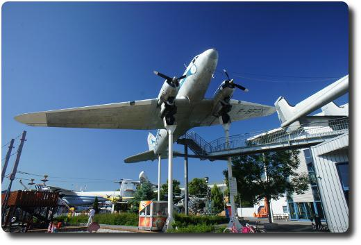

Besuch im Technikmuseum Speyer
Am vergangenen Donnerstag (Fronleichnam) haben wir endlich unseren Gutschein für das Technikmuseum in Speyer eingelöst, den wir vor knapp einem Jahr bei der Frankfurter Rundschau gewonnen haben.
Die ausgestellten Autos, Schiffe, U-Boote, Eisenbahnen, Flugzeuge und Raumschiffe(!) sind klasse, es gibt total viel zu sehen. In viele Flugzeuge und Schiffe kann man hinein- und durchgehen. Grandios ist die Boeing 747 in 30 Metern Höhe. Echt eindrucksvoll. In ihr wurde die Einrichtung zum Teil entfernt, sodass man eine direkte Vorstellung über die Größe des Flugzeugs bekommt. Noch größer aber, geradezu phänomenal, ist der Laderaum der russischen Antonov. Kaum zu glauben, dass dieses Flugzeug wirklich fliegen kann!
Obwohl das Museum ganz schön ist, einen Kritikpunkt habe ich aber doch: Die Informationstexte zu den Exponaten sind oft sehr kurz und meist sind Hintergrundinformationen Mangelware. Selbst der Museumsführer, den man für 3€ an der Kasse kaufen kann, bietet nur wenig mehr Informationen. Hier könnte man den interessierten Besuchern sicher noch mehr bieten.
Alles in allem aber ein einmaliges Museum, dass sich gut mit einem Stadtbesuch von Speyer verbinden lässt. Wir ließen uns dort bei strahlenden Sonnenschein mehrere Eis-Tüten schmecken.
Haftungsausschluss: Die in diesem Beitrag genannten Orte/Veranstaltungen habe ich privat besucht. Ich habe kein Geld oder Dienstleistungen erhalten, um für diese zu werben.